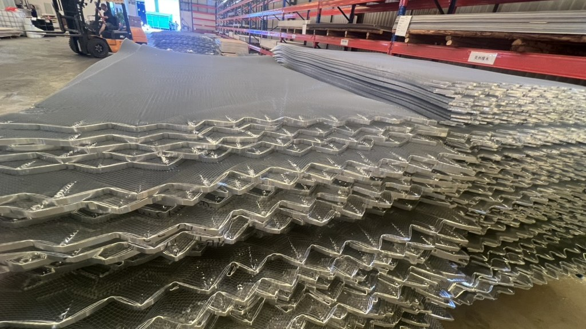

Taotao business-visit photo for material-handling context. It does not prove a particular grade, coating or supplier claim.
An overseas buyer has two prices for galvanized steel sheet intended for a roofing project. Both quotations say “ASTM A653,” but one is cheaper. Before ranking the offers, the buyer needs to know whether the same material has been priced.
A standard name is not a complete purchase specification
ASTM A653/A653M-25 covers hot-dip zinc-coated or zinc-iron alloy-coated steel sheet in coils and cut lengths. Its public scope describes multiple steel designations and coating weights or designations. It does not turn every sheet bearing the standard name into the same grade, thickness, coating or finished roof panel. Project design and destination requirements must be checked separately.
Taotao's quote alignment sheet
| Ask each supplier for | Compare with | Why it matters |
|---|---|---|
| Steel designation, grade and applicable ASTM edition | Drawing, purchase specification and rival quote | “A653” alone leaves material options open. |
| Base-metal thickness, stated units and tolerance basis | Drawing and mill document | A nominal figure without its measurement basis is hard to compare. |
| Zinc or zinc-iron coating designation | Quote, mill document and agreed sample | ASTM describes different coating designations; ask for the exact one priced. |
| Profile, length, effective coverage and finish | Project takeoff and packing plan | Identical material may still produce a different usable panel quantity. |
| Lot identification and proposed evidence at delivery | Mill document and bundle labels | The received bundles need a path back to the offered specification. |
Request the underlying mill document and a marked-up quotation. Check that its material and coating designations apply to the actual proposed supply, not an unrelated sample. Match units and quantities before comparing totals. If the seller cannot yet name the source mill or lot, record those fields to be verified and make document delivery a purchase condition.
Red flags and the decision
Pause when the coating field is blank, “galvanized” is the only material description, or a sample document carries a different grade from the quote. A mill document is evidence to reconcile; its presence alone is not proof that the delivered bundles match. The cover photo is a Taotao business-visit scene and does not establish the pictured metal's grade or coating.
Continue comparing when both offers specify the same grade, thickness, coating and usable dimensions. Pause if a key field is missing or uses incompatible units. Escalate a disputed roofing or structural requirement to the buyer's project engineer and applicable local rules. Taotao Trading can help organize the supplier documents and factory questions; the buyer's engineer decides whether the selected specification suits the project.
Explore Taotao's steel product range to frame the required profile. One action: send a redacted sheet specification for a quote-scope gap review before committing to a price.